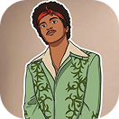
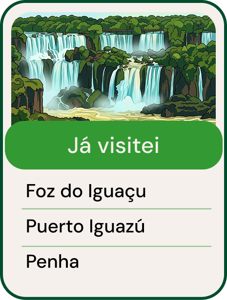

Uma página pessoal com meus interesses, curiosidades, lugares marcantes e habilidades.


Sobre mim
Sou uma pessoa calma e dificilmente fico bravo. Sou mais reservado, mas costumo conversar e resolver as coisas de forma amigável, buscando a melhor solução. Também sou organizado no dia a dia. Gosto muito de nadar e de montar LEGO que são meus hobbies favoritos.
15 anos

21/12/2010

Perto do Shopping Tietê e da Faculdade Anhanguera

Calmo e reservado

Pensamento analítco
Criativo

Favoritos
Coisas que eu gosto, curiosidades sobre mim e minhas músicas e livros preferidos.

Interesses
Curiosidades
- Morei 8 anos em São Bernardo do Campo
- Torço para o Santos
- Ganhei uma medalha na OBMEP
- Tenho uma cachorro chamada Cristal
Cantores e livros






Habilidades
Tecnologias e competências que uso para criar, resolver problemas e tirar ideias do papel.